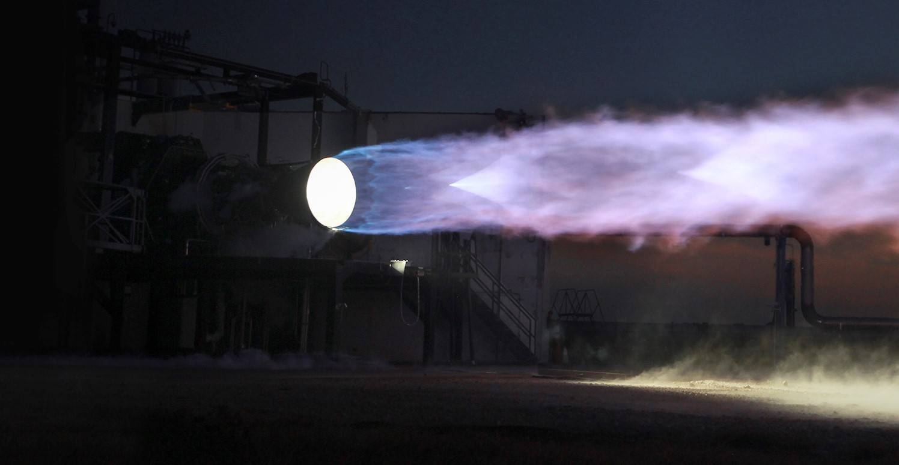
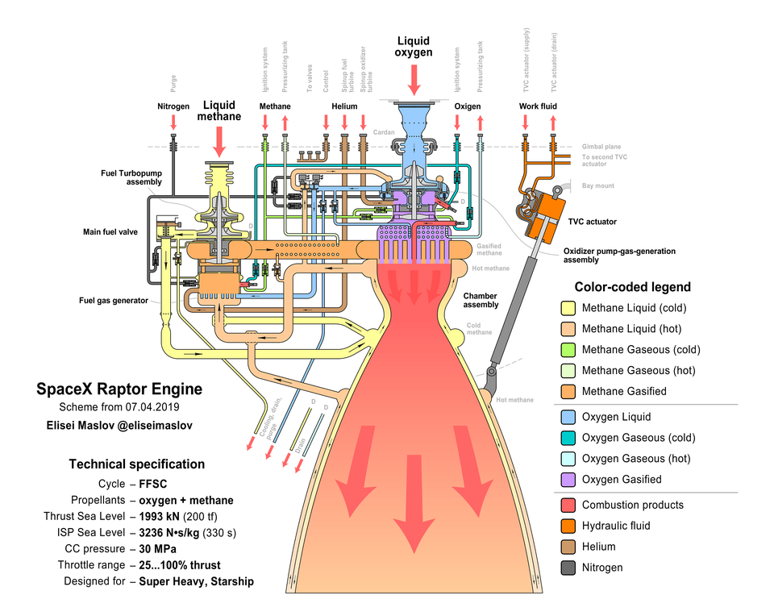

SPACEX RAPTOR 1
Raptor («Раптор») — жидкостный ракетный двигатель, разрабатываемый компанией SpaceX. Двигатель закрытого цикла с полной газификацией компонентов топлива, работающий на жидких метане и кислороде, планируется применять на космическом корабле Starship
Конструкция
Двигатель Raptor использует наиболее эффективную замкнутую схему с полной газификацией компонентов топлива, в отличие от другого двигателя SpaceX — Merlin, имеющего более простую систему газогенератора с открытым циклом (закрытый цикл использовался на главных двигателях «Шаттлов» — RS-25 и в нескольких российских ракетных двигателях, например, в РД-171, РД-180, РД-191).
При использовании цикла с полной газификацией компонентов, где почти полный расход кислорода с небольшой долей метана будет приводить в действие турбонасос окислителя и почти полный расход метана с небольшой долей кислорода будет приводить в действие турбонасос горючего, оба потока — окислитель и горючее — будут полностью газифицированы в отдельных газогенераторах, прежде чем попадут в камеру сгорания.
ЖРД выполнен по двухвальной схеме подачи компонентов топлива (возможна протечка метана только в тракт метана и кислорода только в тракт кислорода, в отличие, например, от RS-25, где для исключения протечки вдоль вала турбины, на котором расположены насосы обоих компонентов, в уплотнение подаётся гелий), а также имеет систему наддува баков компонентов топлива соответствующими газами, что устраняет потребность в гелии.
Двигатель использует переохлаждённые компоненты топлива, что позволяет увеличить массу топлива в баках за счёт увеличения её плотности, повышает удельный импульс, тягу, а также снижает риск кавитации в турбонасосах.
Воспламенение топлива при запуске на земле и в полёте осуществляется системой искрового зажигания, что исключает необходимость в пирофорной смеси триэтилалюминия-триэтилборана для зажигания двигателей на РН семейства Falcon.
С 2018 года ожидается, что двигатель будет иметь удельный импульс 380 с в пустоте и 330 с у земли.
Характеристики
| Тяга на уровне моря Земли, кН | 3050 |
| Удельный импульс на уровне моря Земли, с | 334,1 |
| Тяга в вакууме, кН | 3290 |
| Удельный импульс в вакууме, с | 360,3 |
| Расход окислителя (кислород, LOX), кг/с | 724 |
| Расход горючего (метан, CH4), кг/с | 206,5 |
| Расход топлива (кислород + метан), кг/с | 930,5 |
| Соотношение компонентов топлива | 3,506 |
| Давление в камере сгорания, МПа | 30 |
| Давление в выходном сечении сопла, МПа | 0,0735 |
| Скорость в выходном сечении сопла, м/с | 3450 |
Разработка
18 июня 2009 года на симпозиуме «Innovations in Orbit: An Exploration of Commercial Crew and Cargo Transportation» Американского института аэронавтики и астронавтики Макс Возофф впервые публично упомянул проект ракетного двигателя Raptor. Проект подразумевал использование топливной пары кислород-водород.
28 июля 2010 года на 46-й конференции «Joint Propulsion Conference» Американского института аэронавтики и астронавтики директор испытательного комплекса SpaceX в МакГрегоре Том Маркьюзик представил информацию о начальных этапах проектирования двух семейств двухступенчатых ракет-носителей и двух новых ракетных двигателей для них. Планировалось, что двигатель Merlin 2 с топливной парой керосин / жидкий кислород для первых ступеней Falcon X, Falcon XX будет способен развить тягу 1 700 000 фунт-сил[en] [7 562 кН] на уровне моря и 1 920 000 фунт-сил [8 540 кН] в пустоте, что сделало бы его самым мощным двигателем в своем классе. Двигатель Raptor, использующий жидкий водород и жидкий кислород, имеющий в пустоте тягу 150 000 фунт-сил [667 кН], удельный импульс 470 с, предназначался для верхних ступеней сверхтяжелых ракет-носителей.
В октябре 2012 года SpaceX объявила о работе над ракетным двигателем, который будет в несколько раз мощнее, чем двигатели Merlin 1, и не будет использовать топливо RP-1. Двигатель предназначался для ракеты-носителя следующего поколения под кодовым именем MCT, способной выводить полезную нагрузку 150—200 т на низкую околоземную орбиту, что превышает возможности SLS НАСА.
Испытания двигателя
26 сентября 2016 года Илон Маск опубликовал в Twitter две фотографии первого испытательного запуска двигателя Raptor в сборе на испытательном комплексе SpaceX в МакГрегоре. Маск сообщил, что целевая производительность — удельный импульс в пустоте — 382 с, при коэффициенте расширения сопла 150, тяга в 3 000 кН, давление в камере сгорания 300 бар [30 МПа]. 27 сентября он пояснил, что коэффициент расширения 150 — для испытательного образца, вакуумная версия будет иметь коэффициент расширения 200. Подробности были обобщены в статье о двигателе Raptor, опубликованной на следующей неделе.
27 сентября 2016 года на 67-м ежегодном Международном конгрессе астронавтики в Гвадалахаре Илон Маск представил подробности концепции ITS. Были даны характеристики двигателя Raptor: давление в камере сгорания 300 бар [30 МПа]; возможность дросселирования тяги в диапазоне 20—100%; номинальная тяга 3 050 кН, удельный импульс 334 с, степень расширения 40; для вакуумной версии — тяга 3 500 кН, удельный импульс 382 с, степень расширения 200.
К сентябрю 2017 года испытательный двигатель, в котором был применён сплав, повышающий устойчивость элементов турбонасоса кислорода к окислению, работающий с давлением в камере сгорания в 200 бар и развивающий тягу в 1 000 кН, прошёл 42 стендовых огневых испытания с общей наработкой 1200 секунд. Самое длительное испытание продолжалось 100 секунд.
29 сентября 2017 года в рамках 68-го ежегодного Международного конгресса астронавтики в Аделаиде Илон Маск представил новую концепцию под кодовым названием BFR[39]. Характеристики двигателя Raptor изменились: давление в камере сгорания 250 бар [25 МПа]; тяга 1 700 кН, удельный импульс 330 с; для пустотной версии — тяга 1 900 кН, удельный импульс 375 с.
Илон Маск объявил, что двигатель Raptor впервые отправится в полёт как часть BFR. В октябре 2017 года он пояснил, что лётные испытания начнутся на полноразмерном корабле (верхней ступени BFR), выполняющем «короткие прыжки» высотой в несколько сотен километров.
17 сентября 2018 года на презентации, в рамках которой был представлен первый космический турист BFR Юсаку Маэдзава, информация о ракете была обновлена; озвучены характеристики двигателя Raptor: целевое значение давления в камере сгорания примерно 300 бар [30 МПа]; тяга около 200 тс [1 960 кН]; потенциально-возможный удельный импульс около 380 с.
4 февраля 2019 года было проведено первое огневое испытание лётного[уточнить] образца двигателя. Испытание продолжалось 2 секунды при давлении 170 бар, достигнута тяга 116 тс [1 137 кН], что составляет 60 % от номинального значения.
7 февраля 2019 года проведено очередное огневое испытание с использованием «теплых» компонентов топлива, после которого Илон Маск сообщил, что двигатель подтвердил проектную мощность, достигнув уровня тяги в 172 тс [1 686 кН] при давлении в камере сгорания 257 бар [25,7 МПа]. Предполагается прирост тяги 10—20 % при использовании переохлаждённых компонентов топлива.
В августе 2019 испытан при полёте аппарата Starhopper.
5 августа 2020 года состоялся тестовый "прыжок" прототипа Starship (SN5) с двигателем Raptor SN27 на 150 м; с тех пор проведено ещё несколько подобных испытаний.
 